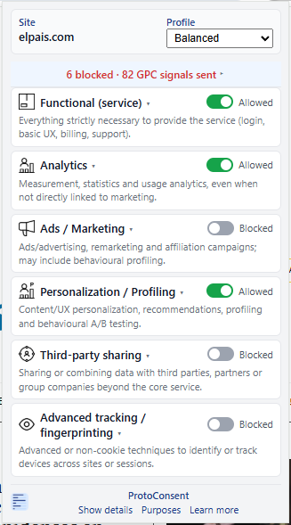

ProtoConsent complements existing consent and tracking solutions. It is not a production consent platform or legal product.
ProtoConsent doesn’t invent new tracking or blocking mechanisms.
It builds on existing browser APIs, but organises everything around
user‑defined, purpose‑based preferences instead of vendors or individual trackers.
Why ProtoConsent?
Moving purpose‑based controls into the browser
Today, consent banners often put all the work on the user and all the power on each individual website. ProtoConsent explores a different approach: giving users a single place to manage data‑use purposes across sites, and enforcing those choices at the browser level.
Give users one place to express their data‑purpose choices across sites.
Complement existing consent and tag setups instead of replacing them.
Turn abstract “tracking” into concrete, per‑purpose decisions.
Enforce choices with browser‑level rules, not one more on‑page script.
How it works
What ProtoConsent actually does
ProtoConsent is a browser extension that lets users define how different data‑use purposes should be treated on each site, then applies those rules locally in the browser. All preferences and enforcement happen on the user’s device.
Per‑site purpose profiles: choose how to treat functional, analytics, advertising, personalisation and advanced tracking for each domain.
Local‑only storage: no backend service and no external preference store.
Network‑level enforcement: uses browser extension APIs (such as declarative network rules) to block or allow requests related to specific purposes.
Composable with CMPs: designed to sit alongside existing consent mechanisms and tag configurations.
Consent Commons icons: purpose categories and site declarations use icons from the Consent Commons visual system for a familiar, consistent visual language.
What you can do today
Early alpha, meant for exploration
ProtoConsent is an early alpha, meant for exploration and feedback,
not production use yet (v0.1.0). It’s best suited for people
comfortable installing early-stage browser extensions and reading code.
Install the extension locally and define purpose profiles on a few test sites.
See how declarative rules apply to real network requests in the browser.
Use the code and data model as a starting point for experiments or internal demos.
Open issues or pull requests to discuss purpose categories or enforcement strategies.
Alpha · code‑firstFeedback welcomeOpen to collaboration
Who it’s for today
Product, data & privacy teams
Explore what browser‑level, purpose‑based controls could look like in practice, beyond today’s consent banners and tracking settings. Use the prototype to discuss future consent flows, analytics and ads choices, and browser signals with stakeholders.
Developers & implementation engineers
Inspect the extension’s architecture, rules, and data model. Experiment with how browser APIs can express and enforce purpose‑based preferences for analytics, advertising, personalisation and third‑party services, and how sites or SDKs might consume those signals.
Researchers & open‑web standards folks
Use ProtoConsent as a sandbox to test ideas around browser‑mediated consent, purpose labelling, and open‑web preference signals. Connect those experiments with ongoing work on web privacy, permissions, and consent‑related standards.
What it looks like
Per-site profiles and purpose toggles
ProtoConsent adds a browser popup where you can pick a profile for each site
(for example Strict, Balanced or Permissive) and adjust purpose toggles
(functional, analytics, ads, personalisation, third‑party services, advanced tracking).
Compact view of the popup when sections are collapsed.
What it looks like
Network‑level rules, no on‑page scripts
The extension applies simple, declarative network rules based on those toggles,
without injecting scripts into pages or sending your data to a backend.

Popup with per-site profile and purpose toggles for common data-use categories.
Integrate the SDK
Read user preferences in 3 lines
The optional JavaScript SDK (MIT licensed) lets your site query the user's consent choices. If the extension is installed, you get a direct answer. If not, every call returns null — no errors, no side effects.
// Load the SDK (ES module, MIT licensed)
import ProtoConsent from 'protoconsent.js';
// Check a single purpose
const allowed = await ProtoConsent.get('analytics');
if (allowed) {
// user allows analytics on this site — load your scripts
}
// Or read all purposes at once
const all = await ProtoConsent.getAll();
// { functional: true, analytics: false, ads: false, ... }
This section queries the ProtoConsent extension in real time using the SDK protocol.
If the extension is installed, your current preferences for protoconsent.org are shown below.
Get involved
If you work around privacy, consent UX, tracking, or browser internals and feel like taking a look or sharing thoughts, I’d really appreciate it.
protoconsent.org is a static site hosted on GitHub Pages. It does not use cookies, analytics, ads, or any form of tracking. No personal data is collected, stored, or shared.
The ProtoConsent extension runs entirely in your browser. All preferences and enforcement data stay on your device in local storage. Nothing is sent to any server.
This site publishes a .well-known/protoconsent.json file declaring its data practices, which the extension can read.